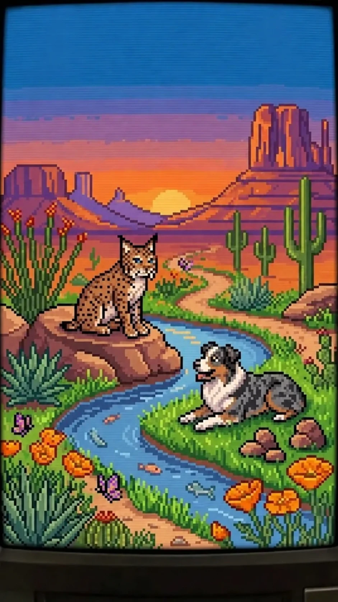
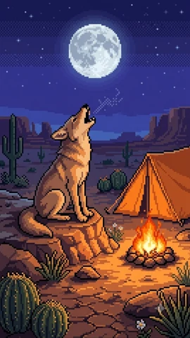
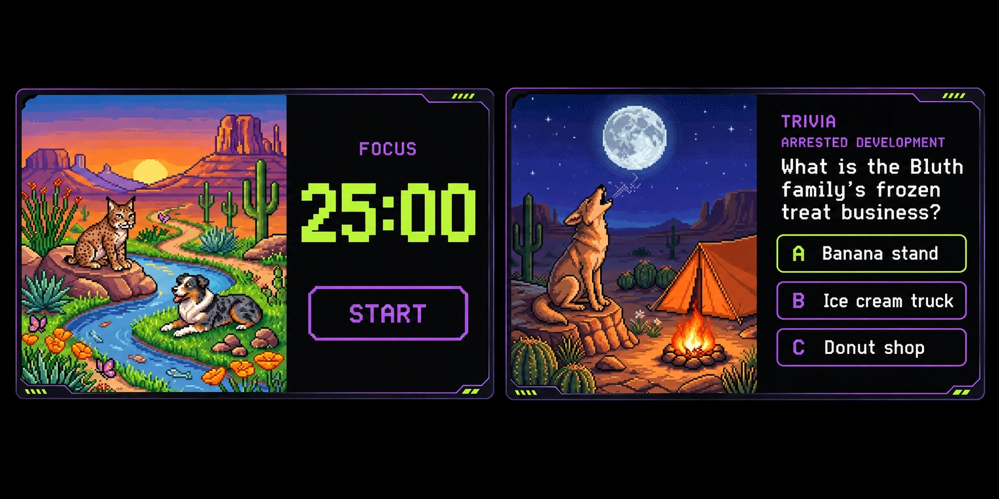
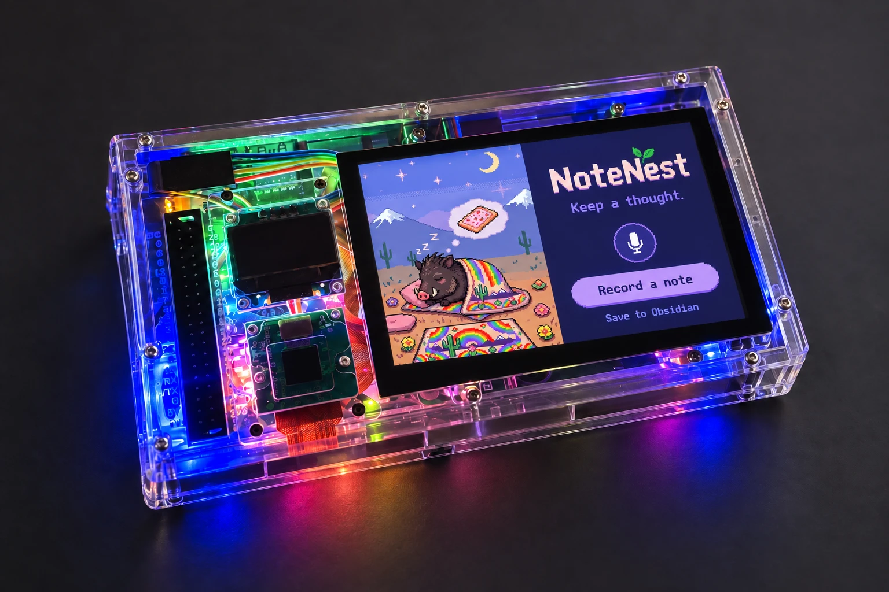

Small, purposeful experiences designed around how I want to use the device.

FOCUS SESSION25:00SCREEN CONCEPT
01 / PLANNED APP
A wild little focus ritual.
A Pomodoro timer with wildlife-inspired visuals. A simple way to start a focus session, take a break, and return to what matters.
First buildStart, pause, reset, and switch between focus and rest.
TV & FILM01 / 05

ARRESTED DEVELOPMENT
What is the Bluth family’s frozen treat business?
Choose A, B, or C.
02 / PLANNED APP
A quick game. A curious mind.
A trivia game with custom animal-inspired art. The three-key O3C keypad becomes the answer controller: a tactile way to play a quick round.
First buildMap the three keys to A, B, and C, reveal the answer, and track the score.
VOICE / WORKFLOW STUDY
“Let’s keep that thought.”
Conversation → Obsidian note
03 / PLANNED APP
NoteNest. Thoughts worth keeping.
Talk to an AI through the device, then save useful output to my Obsidian knowledge base so the conversation becomes something I can revisit.
First buildVoice input, a spoken response, and a deliberate save-to-note action.
03 / PROTOTYPES & MOCKUPS
Ideas, taking shape.
Design studies for the Raspberry Pi touchscreen. These show the intended experience; the apps are still in development.

Interface concepts / animal-inspired artwork / apps not yet built

NoteNest / app concept visualized on my Raspberry Pi
NoteNest. Keep a thought.
A voice-to-notes concept for capturing an idea, shaping it with AI, and saving useful output to Obsidian. The sleeping javelina artwork appears on the device’s landscape screen.
NOTENEST / THE PROPOSED AI EXPERIENCE
Say it. Shape it. Save what matters.
TalkCapture a spoken question. Microphone setup still to choose and test.
RespondConnect speech and an AI service, then hear the response through the device.
KeepReview the useful output and save it as a Markdown note. Obsidian integration is still to build.
04 / COMMUNITY
Built with curious people.
I attend Raspberry Pi and Arduino nights at HeatSync Labs in Mesa. It’s a place to ask questions, try things, and learn alongside other makers.